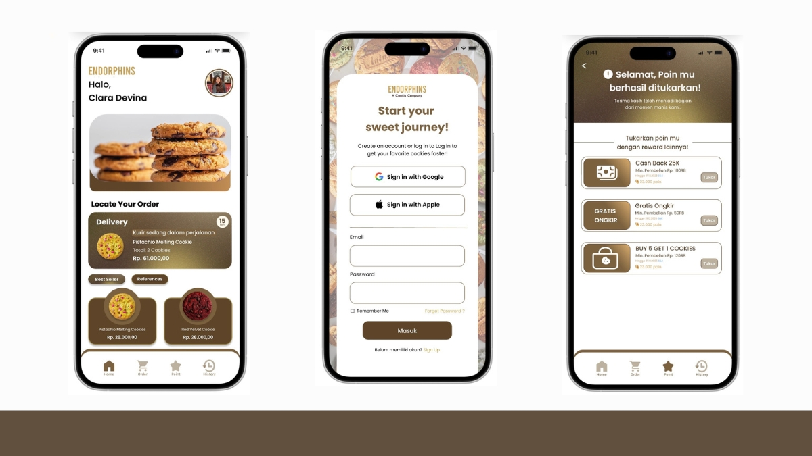
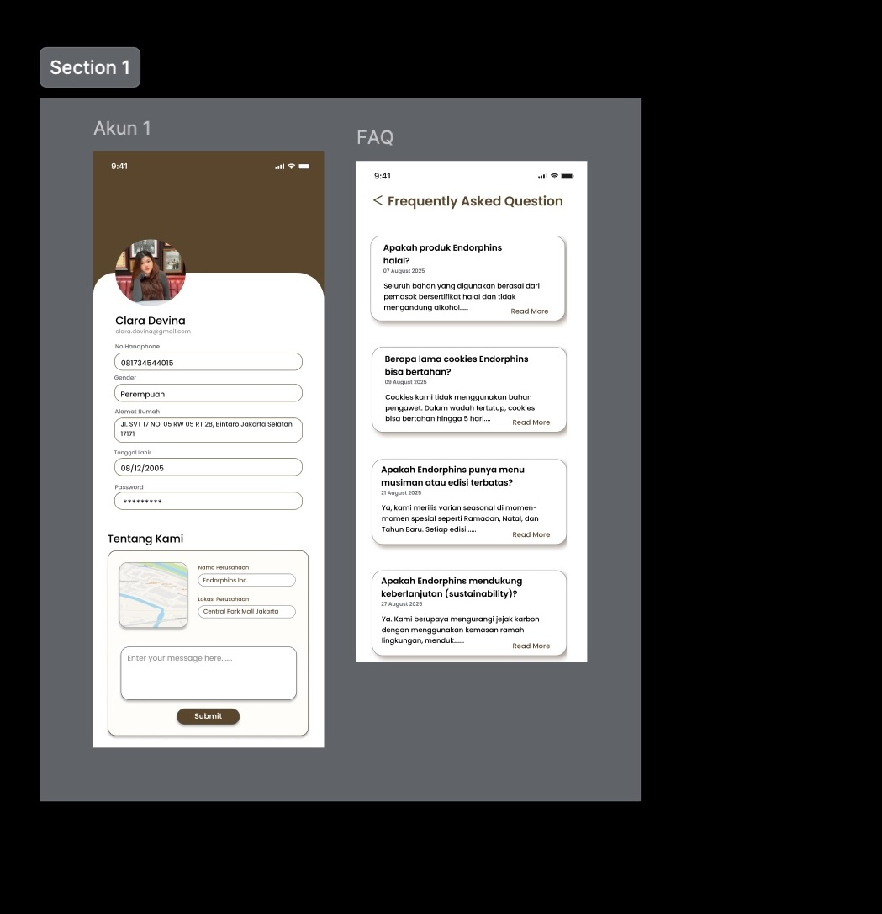
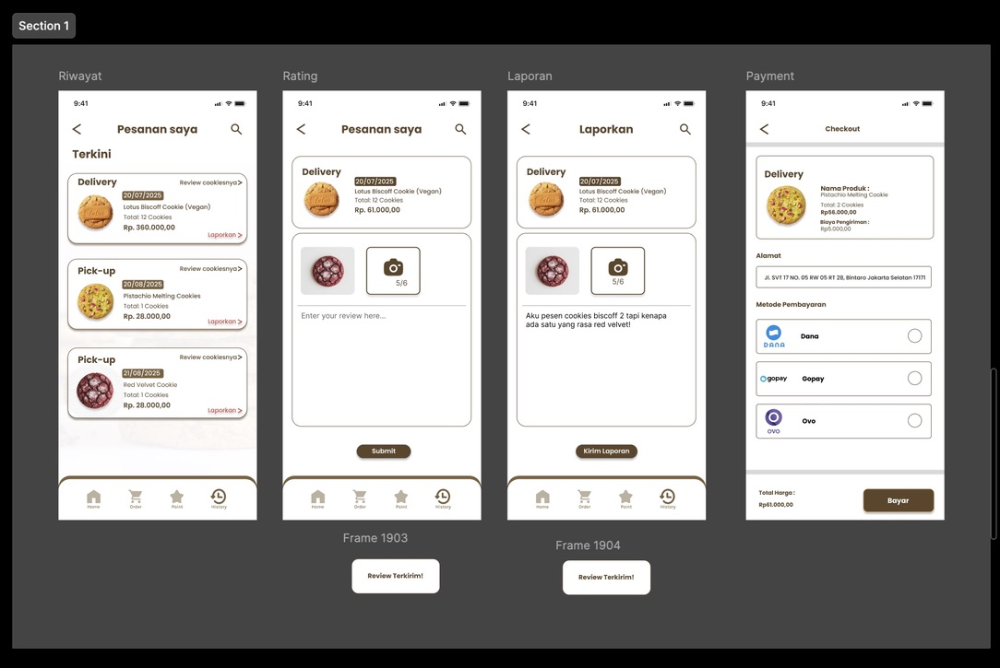
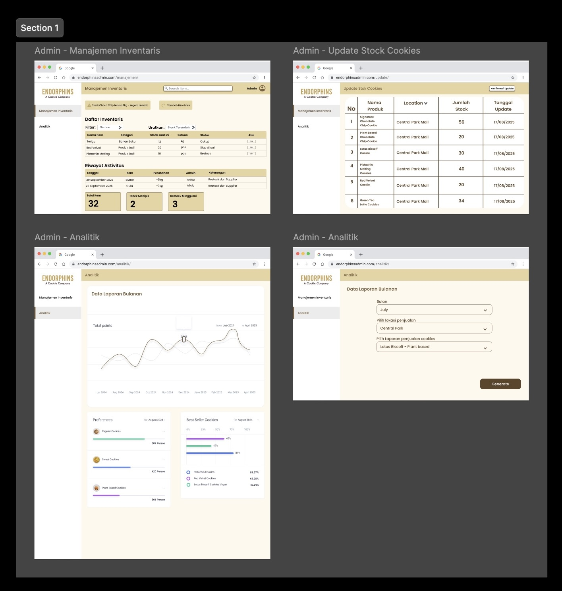
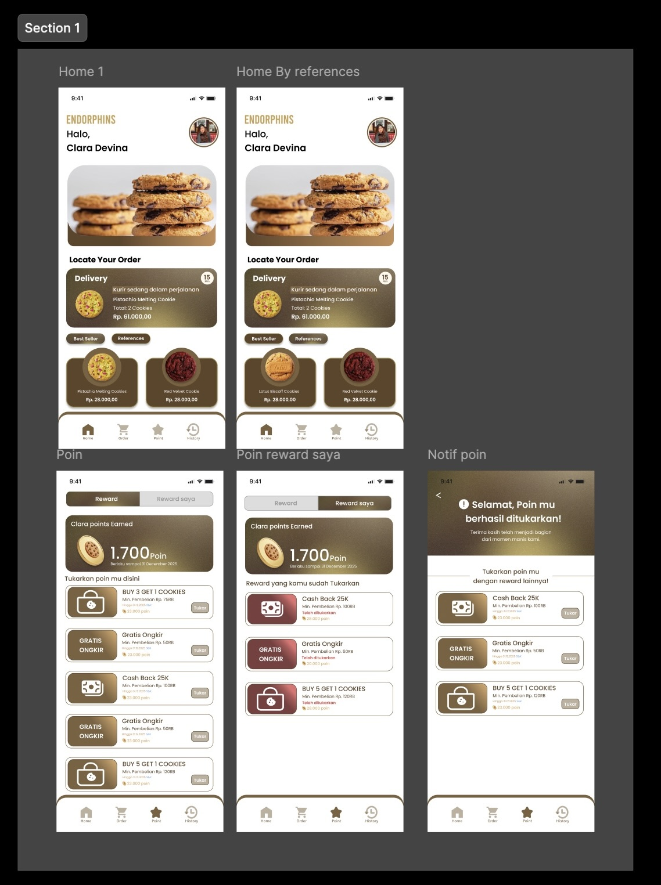
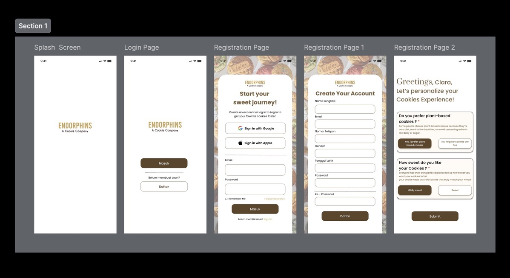

Endorphins Cookie App
Merancang pengalaman pemesanan cookies yang personal dan menyenangkan, mengubah transaksi sederhana menjadi momen kebahagiaan.

Ringkasan Proyek
Proyek ini bertujuan untuk mentransformasi proses pemesanan cookies dari yang sebelumnya manual menjadi sebuah pengalaman digital yang efisien dan menyenangkan. Tantangan utamanya adalah mengatasi proses pemesanan via chat yang seringkali lambat, rawan kesalahan, dan membuat pelanggan ragu akan ketersediaan stok, yang juga membebani staf dengan pencatatan ganda dan risiko miskomunikasi. Sebagai solusinya, dirancang sebuah aplikasi mobile yang intuitif untuk tiga pengguna utama (Pelanggan, Admin, dan Kurir), dengan fokus utama pada kemudahan penggunaan dan transparansi sistem.
Fitur Unggulan
- Pemesanan Terintegrasi: Opsi delivery dan pick-up dalam satu alur yang mulus.
- Dashboard Admin: Memungkinkan staf mengelola stok secara real-time untuk menghindari kekecewaan pelanggan.
- Program Loyalitas: Sistem poin dan reward untuk mendorong pembelian berulang.
- Pelacakan Pesanan Live: Memberikan transparansi dan rasa aman bagi pelanggan saat menunggu pesanan diantar.
Dampaknya
Implementasi aplikasi Endorphins memberikan manfaat ganda. Dari sisi bisnis, aplikasi ini meningkatkan efisiensi operasional, mendorong loyalitas pelanggan melalui pengalaman yang konsisten, dan menyediakan data penjualan yang dapat digunakan untuk pengambilan keputusan yang lebih cerdas, sejalan dengan prinsip manajemen berbasis data (Davenport, 2013). Dari sisi pelanggan, aplikasi ini menghadirkan pengalaman pemesanan yang lebih cepat, personal, dan minim kecemasan, sesuai dengan teori pengalaman pengguna (UX) yang menekankan pentingnya kemudahan, kecepatan, dan kepuasan pengguna (Garrett, 2011).





Jelajahi Prototipenya
Rasakan sendiri pengalaman manis memesan melalui Endorphins app. Prototipe interaktif tersedia di Figma melalui tautan di bawah ini.
Buka Prototipe di Figma